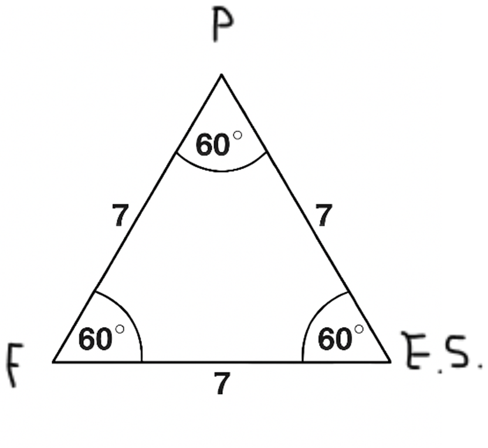

15/11/2025
15/11/2025
Desejo expressar a lógica da Igreja ter crido no Concílio de Nicéia que o Espírito Santo procedia do Pai somente.
Amigo, estes são dias de muita misericórdia derramada sobre mãos que estavam duras - seus juntas e músculos mal podiam dobrar-se para segurar Minha graças e apertar a mão de muitos de seus irmãos. Falo de mãos Sagradas que sofriam muito por estarem resistindo à fluidez do Espírito Santo irrigando os movimentos de suas mãos, que custavam dobrar-se para apertar a mão do irmão, que a tanto baniram de seu convívio e segregaram de sua condição religiosa. Mas envio-lhes muitos favores por rios de graça misericordiosa e serão livres, e suas cadeias cairão, e poderão apertar a mão um dos outros e referir-se a Mim como Senhor deles e do seu próximo; dirão: “Nosso Senhor Jesus Cristo”, “Nosso”, pois será dito que Sou Senhor deles e do seu próximo mais uma vez. Isso retira graves dores, dos espinhos que essas atitudes de endurecimento cravaram em Meu Coração, e atraem a bênção do Seu Senhor por essa atitude de unidade, pois é chegada a hora, e a Minha unidade tem o poder de aliviar as Minhas dores que se perpetua na Igreja, que é o Meu corpo místico, na Minha Cruz.
Quero falar em parábolas pois tocarei em um assunto que pelas parábolas é mais bem explicado.
Desejo expressar a lógica da Igreja ter crido no Concílio de Nicéia que o Espírito Santo procedia do Pai somente. Quero falar com sinais e pensamentos lógicos, pois é assim que desejo que a verdade seja apresentada, pois assim foi que Eu defini à Humanidade, que vive em na Terra e no Céu, com seus parâmetros de realidade e lógica que Eu defini, e ao Me revelar, nunca excluir o pensamento racional do coração humano, nem mesmo na mais profunda sabedoria (a razão do coração é pura), pois o que faço tem como ser explicado, mas o que Sou em toda Minha Essência é um mistério que o ser humano limitado e toda a criação não pode conter em si por completo, pois Sou Infinito; o que pode ocorrer é a cada dia mais ser acrescido de um conhecimento maior de mim, e assim, para os que viverão no Céu, conhecer-Me a cada passo, mais e mais.
No Credo de Nicéia refere-se a Mim como filho, ao Pai, como Pai, e ao Espírito Santo como Espírito Santo, e esses nomes que revelamos de Nós memos não foram decididos por seres criados, foram decididos por cada Pessoa da Trindade que somos, e mesmo sendo iguais, todos Deus, todos Senhores, todos Reis, todos Todo-Poderosos, nós demos ao Pai o nome de Pai, a Mim demos o nome de Filho, e que fui gerado no Pai antes de Todos os Séculos, sempre existi no Pai, e demos ao Espírito Santo o Seu Nome, Espírito Santo, todos os três de comum acordo escolhemos esses Nomes, e cada qual não foi sem razão e significado lógico, para assim, Nos revelarmos a vós, criação. E isso, ao criamos o Homem e todas as coisas, pois participamos, cada qual na Criação, todas as coisas levam essa mesma nomenclatura e espelham Nossa Pessoa Una e Trina, impressa, em diversos graus em si.
Basta entender que mesmo sendo todos iguais e todos Deus, em comum acordo, segundo Nossa Sabedoria eterna, decidimos que o Pai seria o Pai, e esse Nome, por si só torna o Pai primaz mesmo sendo igual, como Pedro é dentre os Apóstolos “primo entre pares” (primus inter pares), e isso, definição já reflexo da hierarquia que são reflexo dos nomes que a Nossa Trinitária vida decidiu a cada uma de nossas pessoas, não em diferenças, mas em função dentro da Trindade que somos.
Poderíamos ter escolhido nomes como Deus um, Deus dois e Deus Três, e assim, cada pessoa, mesmo Nós sermos apenas um Deus, teríamos três pessoas definidas com nomes numéricos, mas foi de Nossa unidade de vontade e pensamento que pudesse haver essa santa hierarquia nos Nossos nomes que sempre leva ao Pai e, nasce do Pai tudo na Nossa Trina vida Una, pois em uma família humana o Pai é a cabeça da Família. Eu, Jesus, sou a Cabeça da Igreja, mas o Pai, apesar de termos o mesmo pensamento e vontade entre Nossas Santas Pessoas Trinas, temos o Pai como o que tem, por função, não por ser mais Deus que Eu e o Santo Espírito, de manter uma ordem hierárquica que é repetida em toda a criação, pois em todos os níveis de criação há hierarquia, mesmo tudo sendo ligado e dependendo um do outro. A hierarquia da criação é espelho da hierarquia presente na Trindade, porém, na Trindade somos iguais em todas as propriedades, no pensamento e vontade, no entanto, pequenas distinções demos a cada uma de Nossas Santas Pessoas por causa de nossa Natureza ordeira e da Nossa função revelada a vós, e fomos Nós a decidirmos isso por amor, que é Nossa Essência.
No Credo de Niceia diz que Eu “vim do Pai antes de existir o tempo”, sempre existi no Pai, pois não comecei a existir, fui gerado comparado a um pensamento é gerado e se torna expressão verbalizada, isso quer dizer que na Trindade o Pai tanto é origem de Minha Santa Pessoa, Origem Daquele que é origem de Mim que Sou origem em Si mesmo, logo, foi pelo Espírito Santo que fui gerado no Pai, antes de existir o tempo, mesmo desde sempre existindo, pois sempre existi no Pai, mas para ser manifesto, fui gerado como um pensamento que se torna Verbalização, e isso, pelo poder do Espírito Santo. Logo, pela lógica desse pensamento, entende-se que o Pai é o autor de toda procedência da Trindade, mesmo toda a Trindade sempre esteve existido, eterna e sem início, sempre existindo, pois como nos manifestamos dessa forma e nos revelamos assim, a lógica, o logos, assim ensina com clareza.
Para concluir, quero usar uma figura, pois dizem alguns que um desenho pode escrever no coração melhor que um livros escrito (a exemplo de um ícone bizantino). Se olharmos para um triângulo equilátero, todos os lados são iguais, os ângulos iguais, mas por decisão do artífice, há um ápice que sempre fica no local mais alto. E assim, a Trindade, mesmo todos sendo iguais, ela se decidiu desenhar às realidades humanas e da criação com certa distinção de autoridade dada ao Pai e isso pela simples lógica de que a hierarquia, mesmo entre iguais, é saudável e boa e sem maior ou mais completo.

Muitas vezes somos expressos por triângulos nas imagens e ícones bizantinos, ou em triângulo, e sempre há uma parte acima, na altura acima, representado o Pai que está no Céu, e isso não é superioridade, pois somos iguais, mas representa o ponto de procedência e da autoridade que damos ao Nome Pai dado ao Pai em Nossa Trina Pessoa.
E assim se entende por qual motivo, incluindo as citações teológicas, o Credo decidido em Nicéia diz que o Espírito Santo procede do Pai. E o “Filioque” pode ser entendido como o Espírito que procede do Pai e é transmitido pelo Filho, pois o Filho, Eu, herdei tudo do Pai, e pode-se dizer que o Espírito é o Amor que está entre o Pai e o Filho também, a Mim, em doação eterna e sem fim.
E essa lógica expressa o motivo de em Nicéia ser visto algum grau de monaquismo no Pai que doa tudo ao Filho e Dele, do Pai, procede todas as coisas em primeiro na Trindade que Somos, pois o Espírito que é a Vida da Trindade, antes de o Tempo existir (sempre), estava Nele e Me gerou o Filho, mesmo Eu já existindo no Pai desde sempre, pois Me gerou para se manifestar, pois antes de ser manifesto pelo Pai, estava Nele, mas estava sem ser visto com foi visto após ser manifesto pelo Espírito Santo que Me gerou no Pai.
Aqui, Eu, o Filho, oro ao Pai que as dificuldades da unidade do Credo Cristão sejam resolvidas, pensando com o Espírito Santo, que manifesta o Logos da ciência da Trindade para a Humanidade. O Pai não deixará de ouvir Minha prece.